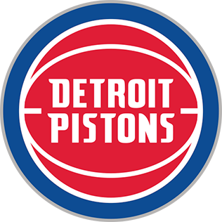

Base: Cade Cunningham
Escolta: Jaden Ivey
Alero: Ausar Thompson
Ala-Pívot: Isaiah Stewart
Pívot: Jalen Duren
Los Pistons son un equipo joven en reconstrucción que apuesta por el desarrollo de talento emergente. Se caracterizan por su intensidad, físico y crecimiento progresivo dentro de la liga.
Detroit ha sido una franquicia histórica con épocas dominantes, destacando por su estilo físico y defensa agresiva.
En diferentes décadas lograron campeonatos con una identidad basada en la dureza y el trabajo en equipo.
Actualmente están construyendo una nueva generación con jóvenes promesas que buscan devolver al equipo a la élite.